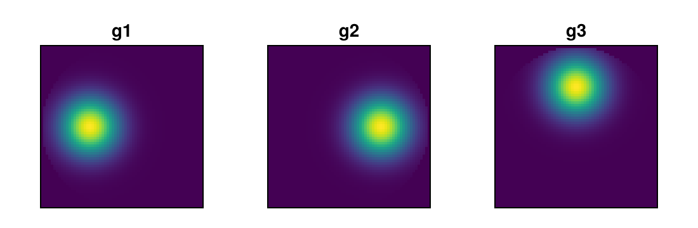
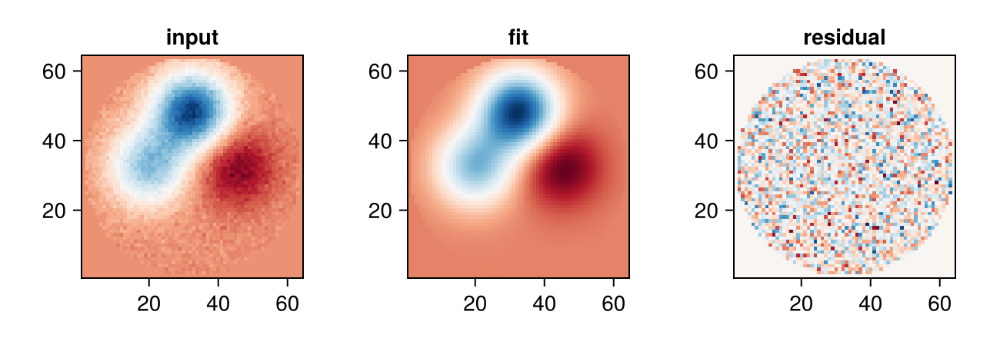
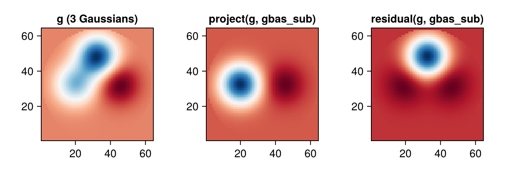

using PhaseBases
import PhaseBases: inner
using CairoMakie
using PhaseBases: decompose ## disambiguate from Makie/GeometryBasics `decompose`
using Random: seed!
CairoMakie.activate!(; type="png")
seed!(1) ## reproducible noiseRandom.TaskLocalRNG()Pixel Basis and Generic Basis
Besides Zernike polynomials, PhaseBases provides two general-purpose basis types for arbitrary function sets on a pixel aperture.
1 — PixelBasis
PixelBasis is an orthonormal basis whose elements are unit-impulse functions at each aperture pixel. It is a thin, memory-efficient wrapper — elements are generated lazily on demand.
# simple circular aperture
N = 64
xs = range(-1, 1; length=N)
ap = [x^2 + y^2 ≤ 1.0 ? 1.0 : 0.0 for y in xs, x in xs] ## first index runs along y
pbas = PixelBasis(ap)
length(pbas) ## number of non-zero pixels3096compose / decompose are O(N_pixels) direct-indexing operations:
# round-trip: array → coefficients → array
arr = randn(N, N) .* ap
coef = decompose(arr, pbas)
arr2 = compose(pbas, coef)
maximum(abs, (arr .- arr2) .* ap) ## ≈ 00.0Alternative constructors:
pbas_bool = PixelBasis(ap .> 0 |> BitArray) ## from BitArray
pbas_idx = PixelBasis(indexes(pbas), (N, N)) ## from explicit indicesPixelBasis{Bool,2} with 3096 pixels in (64, 64) array
2 — Generic Basis (Arbitrary Functions)
The Basis type builds a pseudo-inverse–based basis from any set of functions restricted to a known pixel subset. This is the most general constructor in PhaseBases — use it when your functions are not Zernike polynomials.
# hand-craft three Gaussian bumps as basis functions
σ = 0.25
centers = [(-0.4, 0.0), (0.4, 0.0), (0.0, 0.5)]
funcs = [
[exp(-((x - cx)^2 + (y - cy)^2) / (2σ^2)) for y in xs, x in xs]
for (cx, cy) in centers
]
# restrict to the circular aperture
ap_idx = findall(!iszero, ap)
gbas = Basis(funcs, ap_idx)
length(gbas) ## 3
norms(gbas) ## norms of the basis functions over the aperture3-element Vector{Float64}:
13.956379445399532
13.956379445399536
13.945938015551821Visualize the three basis functions:
fig = Figure(; size=(550, 180))
for i in 1:3
ax = Axis(fig[1, i]; title="g$i", aspect=DataAspect())
heatmap!(ax, (elements(gbas)[i] .* aperture(gbas))'; colormap=:viridis)
hidedecorations!(ax)
end
fig
Fitting a wavefront in the custom basis
# true wavefront: weighted sum of the Gaussians + noise
true_coef = [0.5, -0.3, 0.8]
wf_true = compose(gbas, true_coef) .+ 0.02 .* randn(N, N) .* ap
fitted = decompose(wf_true, gbas)
wf_res = wf_true .- compose(gbas, fitted)
fig2 = Figure(; size=(650, 220))
ax1 = Axis(fig2[1, 1]; title="input", aspect=DataAspect())
ax2 = Axis(fig2[1, 2]; title="fit", aspect=DataAspect())
ax3 = Axis(fig2[1, 3]; title="residual", aspect=DataAspect())
heatmap!(ax1, (wf_true .* aperture(gbas))'; colormap=:RdBu)
heatmap!(ax2, (compose(gbas, fitted) .* aperture(gbas))'; colormap=:RdBu)
heatmap!(ax3, (wf_res .* aperture(gbas))'; colormap=:RdBu)
fig2
Fitted coefficients vs truth:
hcat(true_coef, fitted)3×2 Matrix{Float64}:
0.5 0.498195
-0.3 -0.297958
0.8 0.8004983 — Orthogonalizing a Basis
The Gaussian bumps above overlap, so gbas is not orthogonal — its Gram matrix (inner products between elements) has non-zero off-diagonal terms. orthogonalize builds an OrthoBasis spanning the same functions via SVD.
gram(b) = [inner(f, g, aperture(b)) for f in elements(b), g in elements(b)]
round.(gram(gbas); digits=3) ## off-diagonal terms present
obas = orthogonalize(gbas)
length(obas) ## still 3: input was full rank
round.(gram(obas); digits=3) ## ≈ identity3×3 Matrix{Float64}:
1.0 -0.0 0.0
-0.0 1.0 -0.0
0.0 -0.0 1.0The orthonormal basis spans the same subspace, so decomposing the same wavefront and recomposing it gives (up to noise) the same reconstruction, just expressed in different (orthonormal) coordinates:
ofitted = decompose(wf_true, obas)
maximum(abs, (compose(obas, ofitted) .- compose(gbas, fitted)) .* aperture(gbas)) ## ≈ 03.5492442318485473e-154 — Projection and Residual
project(a, b) gives the part of a explained by basis b; residual(a, b) gives what's left over (a .- project(a, b)).
To make the residual non-trivial, build a sub-basis gbas_sub that only spans the first two of the three Gaussians, then project a vector g that lives in the full 3-Gaussian span onto it. The third Gaussian's contribution cannot be explained by gbas_sub, so it must show up in the residual.
gbas_sub = Basis(funcs[1:2], ap_idx) ## only the first two Gaussians
g = compose(gbas, [0.5, -0.3, 0.8]) ## lives in the full 3-Gaussian span
g_proj = project(g, gbas_sub)
g_res = residual(g, gbas_sub)
maximum(abs, (g .- (g_proj .+ g_res)) .* ap) ## ≈ 0, project + residual = g1.1102230246251565e-16g_res is exactly orthogonal to gbas_sub, i.e. to both of its basis functions f1, f2 — this is what project/residual guarantee:
[inner(g_res, f, ap) for f in elements(gbas_sub)] ## ≈ [0, 0]2-element Vector{Float64}:
-9.2148511043888e-15
-3.674838211509268e-14The heatmap of g_res (below) is not simply the omitted Gaussian f3: it also shows structure near the centers of f1 and f2. Orthogonality is an integral condition, not a pointwise one, and since the three Gaussians overlap, f3 is itself not orthogonal to f1 and f2. The projection therefore removes part of f3's shape too, and the residual is whatever remains orthogonal to gbas_sub as a whole.
fig3 = Figure(; size=(650, 220))
ax1 = Axis(fig3[1, 1]; title="g (3 Gaussians)", aspect=DataAspect())
ax2 = Axis(fig3[1, 2]; title="project(g, gbas_sub)", aspect=DataAspect())
ax3 = Axis(fig3[1, 3]; title="residual(g, gbas_sub)", aspect=DataAspect())
heatmap!(ax1, (g .* ap)'; colormap=:RdBu)
heatmap!(ax2, (g_proj .* ap)'; colormap=:RdBu)
heatmap!(ax3, (g_res .* ap)'; colormap=:RdBu)
fig3
Non-allocating fits: project! / residual!
When the basis is fixed and only the target array changes — e.g. inside an iterative fitting loop — project!/residual! avoid allocating a new coefficient vector and output array on every call. Preallocate the buffers once, outside the loop:
coeffs_buf = Vector{Float64}(undef, length(gbas_sub))
target_buf = similar(g)
residual!(target_buf, coeffs_buf, g, gbas_sub)
target_buf ≈ g_res
# measured inside a function to avoid global-scope dispatch overhead in @allocated
check_allocs(target, coeffs, a, b) = @allocated residual!(target, coeffs, a, b)
check_allocs(target_buf, coeffs_buf, g, gbas_sub) ## warm up (compilation)
check_allocs(target_buf, coeffs_buf, g, gbas_sub) ## 01125 — When to Use Which
| Basis | Use case |
|---|---|
ZernikeBW | Standard Zernike expansion, moderate order |
PixelBasis | Pixel-level operations, zonal phase |
Basis | Any custom function set (Gaussians, wavelets, …) |
ShiftedBasis | Basis with a non-zero origin (mean subtraction) |
6 — Summary
| Feature / function | Purpose |
|---|---|
PixelBasis(aperture) | Orthonormal pixel-impulse basis |
PixelBasis(mask::BitArray) | From boolean mask |
Basis(functions, indexes) | Generic pseudo-inverse basis |
ShiftedBasis(funcs, origin, idx) | Basis with offset origin |
compose(b, coef) | Coefficients → array |
decompose(arr, b) | Array → coefficients |
orthogonalize(b) | Build an orthonormal basis spanning the same functions |
project(a, b) | Part of a explained by basis b |
residual(a, b) | Part of a left over after project |
project!, residual! | Non-allocating versions (preallocated buffers) |
elements(b), norms(b) | Inspect basis functions |
mask(b), aperture(b) | Aperture metadata |
This page was generated using Literate.jl.